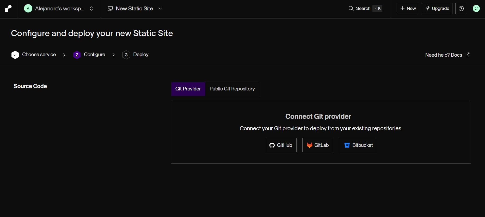
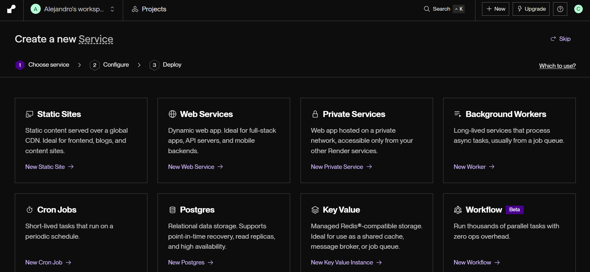
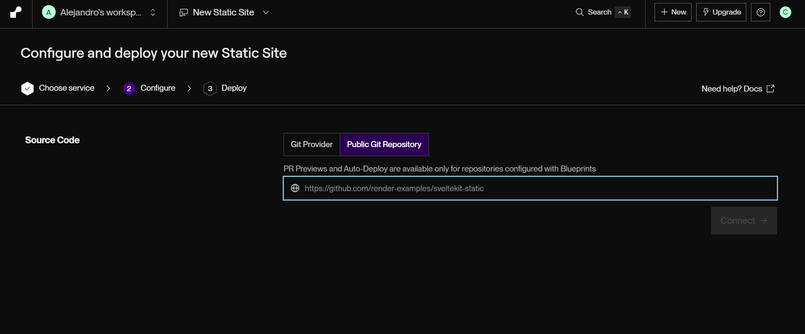

Plataformas, herramientas y una guía práctica para llevar tus proyectos a producción sin gastar un centavo.
Lanza tu MVP o portafolio sin inversión. Ideal para aprender y validar ideas antes de escalar.
Conecta tu repo de GitHub y tu app está online. Sin configurar servidores, sin SSH, sin dolor de cabeza.
Entiendes CI/CD, dominios, variables de entorno y más. El mejor way to learn es deployando de verdad.
Si crece, migras a un plan de pago. Pero empezar gratis te da tiempo para encontrar product-market fit.
Sitios estáticos, React, Vue, Angular, HTML/CSS/JS puro.
Node.js, Python, Go, Java. APIs REST, microservicios.
Control total. Docker, bases de datos, lo que quieras.
Deploy ultra rápido. Detección automática de stack. $5 de crédito mensual gratis.
Dockerfile / Docker ComposeHosting estático directo desde tu repo. Ideal para documentación y portfolios.
100% gratuito, sin límite realCDN ultra rápido, Workers para lógica serverless. Sin límite de bandwidth.
El más rápido del mundoBackend-as-a-Service. Auth, DB, storage, realtime. Free tier generoso.
Para apps completas| Plataforma | Tipo | Stack principal | Limitación clave | Curva de aprendizaje |
|---|---|---|---|---|
| Vercel | Frontend + Serverless | Next.js, React, Vue | 1 persona, no comercial | ⭐ Fácil |
| Netlify | Static + JAMstack | Cualquier framework | 300 min build | ⭐ Fácil |
| Render | Backend + DB | Docker, Node, Python | Sleep tras 15 min | ⭐⭐ Media |
| Fly.io | Containers globales | Docker | 3 máquinas compartidas | ⭐⭐⭐ Alta |
| Oracle Cloud | VMs completas | Lo que quieras | Configuración manual | ⭐⭐⭐ Alta |
| GitHub Pages | Estático | HTML/CSS/JS | Solo estático | ⭐ Fácil |
| Cloudflare Pages | Estático + Workers | Frameworks + JS | Sin DB propia | ⭐⭐ Media |

Conecta tu cuenta de GitHub para acceso directo a tus repos.

Selecciona tu repo, elige el runtime (Docker, Node, Python...) y configura las variables de entorno.

Render asigna un dominio .onrender.com con SSL automático. ¡Listo!
Empieza por Vercel o Netlify si tu app es frontend. Es lo más rápido para tener algo online.
Render para backend. Si necesitas API + DB, Render te da todo gratis con mínima config.
Oracle Cloud para el valiente. Si quieres un servidor real y no te asusta SSH, es el mejor deal que existe.